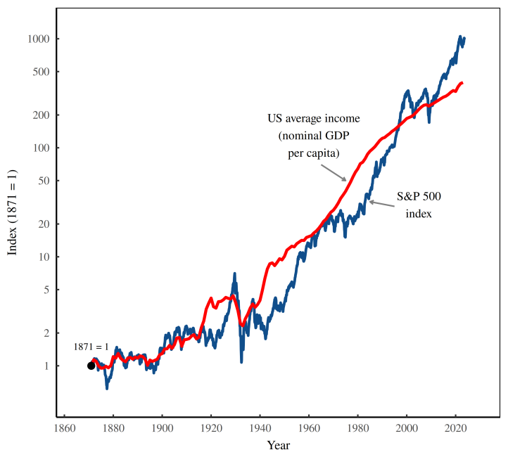
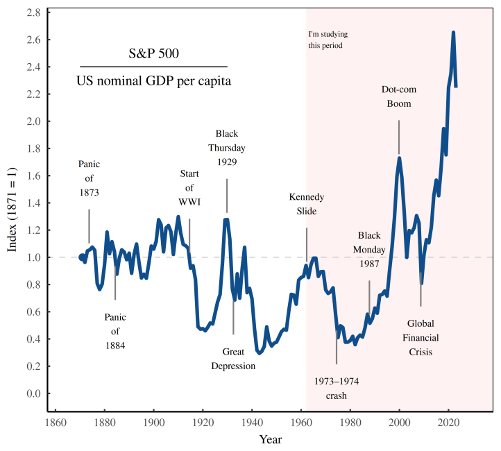
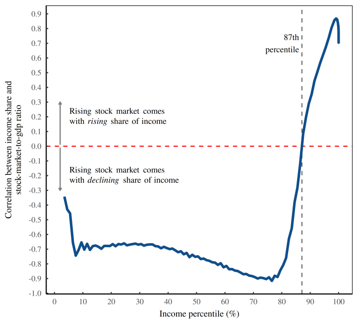

11 Capital Markets
11.1 Bond Market
Tooze
“If Tuesday was market chaos, Wednesday was chaos on a trampoline on drugs”
Katie Martin on the bond-market mincing machine:
Global bond markets have been through a mincing machine in the past few weeks, inflicting pain on everyone from retail investors to insurance companies. Alarmingly, it is not obvious why. But the competing schools of thought work something like this:
Theory one is that the supposedly big brains of the investment world have been spectacularly wrongfooted by the ascent in global interest rates and are scrambling to catch up. Central banks are cementing their view that rates will be higher for longer, while slower-moving investors have been wronger for longer. Something had to give, and this will all balance out and blow over soon.
Theory two is that we are at the foothills of a catastrophic reckoning with the fiscal incontinence and addiction to low rates that had taken hold over the previous few decades, and we should brace for a serious challenge to the global dominance of the dollar and US government bonds’ centrality in financial markets. This will not blow over soon.
Source: FT (paywall)
11.2 Stock Market
Fix
When stocks go up, the vast majority of people see their share of income (and wealth) decline.

Figure: US stock returns in context. This figure shows how the S&P 500 index (a measure of US stock prices) has risen relative to US nominal GDP per capita. (Note the log scale on the vertical axis.) Over the long haul, the race is quite evenly matched. But during the short term, the competition goes in cycles. Sometimes the stock market wins. Other times GDP wins.
Jonathan Nitzan and Shimshon Bichler have done fascinating work studying how the stock market performs relative to average wages.
When we compare stock-market gains to GDP per capita, we’re effectively watching a financial race between two hypothetical people. That race has a cyclical pattern.

Figure: A race into uncharted territory. This figure plots the ratio between the S&P 500 index and US nominal GDP per capita. For much of the last century and a half, the race was fairly equal. But in the 21st century, stocks have taken a commanding lead over GDP.
Investment is at an all-time high relative to GDP. But if the past is any indication, there’s nowhere to go but down.
Top percentiles saw their income share rise.
The message is clear: a rising stock market doesn’t benefit everybody. In reality, one person’s gain is another person’s pain.

Figure: Stock-market pain and gain as a function of income percentile. This figure illustrates how income gets redistributed as stocks go up. For each US income percentile (plotted on the horizontal axis) I measure the correlation between income share and the stock-market-to-GDP ratio. The blue curve shows how this correlation varies as a function of income percentile. For the vast majority of Americans (the bottom 87%) the correlation is negative, meaning stock-market gains harm their share of income. It’s only among the top decile where things turn positive.
In the United States, the stock market takes wealth (and income) from the many and hands it to the few.
11.3 China
Petry Abstract
Since 2009, China’s capital markets have developed and internationalized to an unprecedented degree, which has contributed to a lot of debates on China’s rise and its implications for the global financial order. Contributing to these debates, this article analyses the development of capital markets in China and their integration into global finance between 2009 and 2019, focusing on three aspects: how Chinese capital markets are developing domestically; how they are inte- grating with global markets; and how Chinese capital markets are internationalizing, i.e. expanding abroad. Thereby, the article analyses the crucial role of securities exchanges who as organizers of capital markets are powerful actors that exercise considerable influence over these markets and their development. This empirical investigation reveals that while they share some characteristics with ‘global’ capital markets, Chinese capital markets function quite differently. The article argues that China’s state-owned exchanges facilitate the development of state-capitalist capital markets – capital markets that follow an institutional logic derived from China’s state-capitalist economic system. Rather than giving in to a neoliberal rulebook, China’s capital markets represent an alternative to, resist and challenge the norms, principles and procedures of the contemporary global financial order. While different capital markets share some characteristics, they are insti- tutionally embedded, and these institutional settings facilitate different institutional logics that underpin and inform the functioning of markets. Instead of viewing capital markets as homoge- neous entities, the article therefore proposes to investigate a ‘varieties of capital markets’ that are shaped by different institutional logics.
Petry Memo
In 1989, capital markets did not exist in China. Fast forward three decades, China’s capital markets have become the second largest equity markets, second largest futures markets and third largest bond markets globally.
While China’s markets had been virtually closed from the outside world for decades, especially since the global financial crisis (GFC) 2007–2009, they have become connected to both regional and global financial markets ‘at an unprecedented pace’.
This growing Chinese significance in global finance is also expressed by the internationalization of the renminbi, how their investments change financing patterns, China’s growing role in development finance and global financial governance, and with the Belt-and-Road Initiative (BRI).
The rapid growth of China’s capital markets takes place within the context of a global financial order (GFO) based on neoliberal principles of open, lightly-regulated, internation- ally-integrated financial markets, guaranteed and facilitated by US power. Scholars are therefore debating whether China is a status quo power integrating into the GFO, a reforming power, a revisionist power challenging this (neo)liberal, US-dominated financial order or whether global finance is itself adapting to accommodate China.
This discussion is linked to broader debates on state capitalism, where some policy makers fear that China will not play by the neoliberal rulebook on which the contemporary global (financial) order is based.
In these debates, state capitalism is often defined in juxtaposition to capital markets, the epitome of liberal capitalism.
By linking state capitalism, capital markets and the neoliberal GFO, this article contrib- utes to these debates, seeking to make a twofold contribution. Empirically, the article anal- yses the post-GFC reform and opening process of China’s capital markets between 2009 and 2019. This empirical investigation reveals that capital markets in China function significantly different from ‘global’ markets. While many Western commentators argue that ‘proper’ capital markets do not exist in China, this article argues that such assessments actually reflect the neoliberal bias that Western views of markets exhibit, thereby shedding light on the contested politics between different types of capital markets championed by China and the US. Theoretically, the article therefore proposes to re-evaluate common global political economy (GPE) conceptions of capital markets: instead of viewing these as uniform entities, in opposition to the state and interlinked with the concept of neoliberalism, to look at an institutionally embedded ‘varieties of capital markets’.
In China one can observe the development of state-capitalist capital markets as Chinese capital markets are intricately linked with state institutions and play an active role in facilitating national development goals. The article examines the crucial role of China’s (stock and derivatives) exchanges as important actors who organize markets in a way that facilitates state-capitalist logic, shap- ing capital market dynamics and directing market outcomes towards state objectives, both within China and internationally. The capital markets organized by China’s exchanges thereby provide an alternative to, resist pressures to conform with, and even challenge the neoliberal capital markets that underpin the GFO. In other words, no matter how deep the reforms, Chinese capital markets will not converge with global markets but rather maintain their distinct character.
As such, the capital markets underpinning the GFO facilitate and perpetuate existing power relations and hierarchies within global capitalism. State capitalism is often defined as the anti-thesis of such governance through markets, as the state’s predominance over markets and impairment of ‘free’ market mechanisms. Proponents of liberal, free markets argue that there might be state capitalism in China, but not ‘true capitalism’.
Moving beyond the fact that states and capitalism have historically been in an intimate relationship, state capitalism literature focuses on a more recent empirical phenomenon – the increasing intensity of government direction and steering in economic processes, especially in emerging markets.
In contrast to earlier forms of state-led eco- nomic development in the late-19th (US, Germany) and mid-20th century (Stalinism, fas- cism, developmental states), contemporary state capitalism relies less on prohibitive tariffs (first wave) or centralized command structures (second wave) but more on market-based economic coordination which, however, is controlled, steered or influenced by the state.
State capitalism highlights ‘the essentially capitalist nature of the [socio-economic] system’ where markets are important but ‘the state plays a very large role’ through intervening into the economy and state-ownership.
While the Chinese state has recognized the usefulness of market-based mechanisms for economic coordination, ‘free’ markets are seen as something not quite to be trusted, endogenously crisis-prone, socially unproductive and leading to a loss of control over the economic system if not strictly regulated. The state rather engages in a ‘pragmatic use’ of markets, managing markets for specific policy goals.
State-owned banks are the main actors in China’s financial system. State capitalism is often understood in juxtaposition to capital markets, the epitome of liberal capitalism. However, capital markets have become more important in China since the GFC.
In GPE literature, states and markets have long been analysed as opposing institutions prevailing over or constraining each other’s actions. While the role of states in promoting capital markets has been well-documented and more recently a focus has emerged around ‘governing through financial markets’, capital markets and their organization are often conceptualized as uniform, and divergencies between markets and the sources of these differences are seldom the focus of GPE analyses.
In the comparative capitalism literature, state and market are also defined as mutually exclusive for economic coordination within national economies.
Especially with regard to the financial system, either the state facilitates credit provision, mainly through state-owned and policy-banks, or market relations fulfil this role. Markets are coordination mechanisms that result from certain institutional arrangements – but capital markets themselves are often conceptualized as homogenous, with little internal variegation.
If not all markets are equal, they might produce different outcomes and socio-economic effects. What is missing is a better understanding of the differential organization of capital markets.
In contrast to the premise that markets are uniform, following the likes of Keynes and Polanyi, economic sociology has shown that markets are ‘embedded in distinct sets of social and political institutions’. Markets are social phenomena that are embedded in and influenced by man-made institutional arrangements. How and by whom markets are organized matters. For capital markets, this function is mainly fulfilled by securities exchanges. Instead of mere institutions/platforms on which market transactions take place, exchanges are powerful actors in their own right who active- ly organize and shape capital markets. ‘Power often depend[s] on control over key financial infrastructures’ that enable the functioning of financial markets.
Exchanges are such actors whose business is to orga- nize, create and control their infrastructural arrangements. Rather than investors who are active within markets, as infrastructure providers exchanges play a more architectural role for capital markets. By deciding the ‘rules of the game’ and acting as gatekeepers in capital markets, deciding who gets in, what is traded and how trading is conducted, exchanges are crucial in shaping capital markets.
But both capital markets and exchanges are embedded and shaped by their institutional environment. These institutional configurations create a particular contextual “logic” or rationality of economic action. Every economy consists of a set of institutions which create distinct patterns of constraints and incentives that shape and channel actors’ behaviours (Zysman, 1994: 245–246). Hence, given the existing institutional structure, a particular institutional logic emerges that is distinct from other institutional contexts. So, while functionally all capital markets are characterized by market-based mechanisms of coordination between buyers, sellers and investors, applying the concept of institutional logic to capital markets reveals how the institutional embeddedness of markets and market organizers shapes these markets, leading to different market dynamics and outcomes.
Consequently, how exchanges (i.e. market organizers) are governed and which con- straints and incentives they face matters. In the West, exchanges are publicly traded com- panies that have to make profitable business decisions to increase shareholder value; they are situated within an institutional setting informed by a neoliberal institutional logic.
Six global exchange groups (GEGs) dominate global capital markets: account- ing for 50% of exchange industry profits, futures trading volume and stock market capitalization globally.
The ostensible purpose of these capital markets that underpin the neoliberal GFO is to achieve ‘efficiency’ by enabling the generation of (private) profit, which is achieved by the principles of ‘free markets’ and ‘free flows of capital’ that should be respon- sible for allocating economic resources without state intervention.
The underlying neoliberal institutional logic that informs the functioning of these markets depoliticizes those markets, proposes a (‘supposed’) separation between state and capital markets, and puts a significant degree of trust and power in the collective agency of private (financial) capital actors to achieve ‘efficient’ outcomes by maximizing (private) profit. While the state is not absent, its priority is enabling private profit creation instead of other socio-economic outcomes, cementing the power of private finance capital.
Merely adopting market- mechanisms (e.g. capital markets) does not make China neoliberal. While market-based finance emerged as an important economic governance tool in China (Gabor, 2018), Chinese capital markets function fundamentally different than neoliberal capital markets. This is because exchanges and capital markets are situated within a very different institutional context – that of state capitalism. The institutional logic of China’s state capitalism is not simply one of command-and-control but a combination of top-down state coordination and bottom-up market competition.
China’s capitalism ‘relies on a unique duality or dialectic whereby state- capitalist features are balanced by [. . .] a variety of hybrid institutional arrangements’ (also, Sum, 2019). Chinese capital markets also follow this institutional logic. Bottom-up you have millions of profit-driven speculating investors that create manias, panics and crashes like in any capital market. But while profit creation for private finance capital is the primary underlying principle in neoliberal markets, importantly, in China, the state intervenes into capital markets to steer them into ‘productive’ tracks that facilitate state objectives. The defining difference between neoliberal and state-capitalist logic is not the existence of markets per se but rather the principles that underlie market organization (profit creation vs state objectives) and the actors that dominate/shape these markets (pri- vate finance capital vs state institutions).
While investors act as entrepreneurs, ‘certain levers of state control remain intact’. As the organizers of capital markets, exchanges remain strictly in government control. These ‘infrastructural arrangements [are important] because this is where you can control the market’. 5 The exchanges are also deeply embedded in the nomenklatura system; doing a good job as senior exchange manager (i.e. directing markets towards state policies) is important for party officials to eventually get promoted to higher positions. ‘The financial industry can therefore justifiably be treated as an integral part of the political system’. In contrast to being ‘marketized’, exchanges in China are rather ‘politi- cized’. Therefore, capital markets can be understood as a site where the authorities exercise ‘statecraft [through] financial control’.
Chinese exchanges organize markets by designing market infrastructures that aim to shape market behaviour by mon- itoring, regulating and managing the behaviour of market participants and direct market outcomes towards the accomplishment of state objectives, both within China and abroad. Rather than neoliberal, the capital markets organized by China’s state-owned exchanges should hence be conceptualized as state-capitalist capital markets.
Neoliberal or state-capitalist, they are both capital markets populated by profit-driven investors and prone to speculative dynamics. However, what can be observed is that in China, a fundamentally different way of thinking about, managing and governing capital markets has emerged, as these markets are permeated by but also reproduce the institutional logic of Chinese state capitalism.
Chinese exchanges develop markets that represent a distinct alternative to neoliberal capital markets.
China’s integration into global finance through its exchanges (largely) conforms with state-capitalist logic, demonstrating their resistance to conform with neoliberal capital markets.
Chinese capital markets not only resist but also challenge US-dominated neoliberal capital markets.
The growing importance of market-based finance in China does not represent a shift towards neoliberalism but rather a perpetuation of Chinese state capitalism through financial means.
In 2017, Xi Jinping noted that the tasks of China’s financial sector were above all ’[to] better serve the real economy! Markets are organized to facilitate these policies.
The partially contradictory nature of state-capitalist institutional logic. On the one hand, the state aims to control financial instability, and on the other hand, it has interwoven social stability with capital market participation which in turn potentially decreases financial stability
The exchanges’ system of risk monitoring and management is used in a delicate balancing act between allowing retail investors to participate in markets but also reduce the volatility that they bring into markets, profes- sionalize/educate them and protect them from themselves and more sophisticated investors.
China has an ambiguous relationship with foreign investors. As one interviewee stated, ‘it’s absolutely a love and hate story, they love the money, love the stability, hate giving up control. . . and hate it if foreign investors want to dominate the terms’.
Foreigners are not allowed to freely participate in Chinese markets but only if they establish local entities, so-called wholly foreign-owned enterprises (WFOEs). 36 As several interviewees noted, setting up WFOEs to trade in capital markets is accepted by the author- ities – because they are registered in China, subject to Chinese laws, funds/profits cannot be easily repatriated, and they can be monitored and controlled by the Chinese exchanges. One called China a ‘façade of an open market’.
‘Step by step there is a whole market infrastructure emerging’ that connects China with the outside world. 50 But while China is increasingly integrating with global finance, international investors have to play according to Chinese rules. Attempts to shape market behaviour and steer market outcomes are maintained by China’s exchanges, following China’s state-capitalist logic of organizing capital markets, and demonstrating China’s resistance to conform with neoliberal capital markets underpin- ning the GFO.
In their current form, global markets are not perceived as fair but as being stacked against Chinese interests, rather benefitting Western private financial actors. Similar to RMB internationalization, the internationalization of China’s capital mar- kets is part of the state’s strategy to change the rules of the game in global finance or at least to create a level-playing field that does not disadvantage China.
This case study hence highlights the need to re-evaluate the conceptual toolbox with which we analyse global finance. In political economy literature, capital markets are often viewed as homogeneous entities, an analytical category different from/contrary to ‘the state’, and capital market development is often linked to a neoliberal policy paradigm. However, as the findings of this article demonstrate, conceptually capital markets (and exchanges) should be analysed separate from neoliberalism.